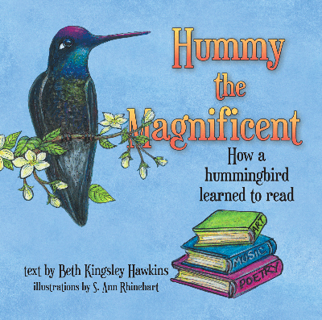

About Annie
Artist Susan Ann "Annie" Rhinehart grew up on a dairy farm in Ohio. That's where her love for nature, animals and flowers began. Her other love in life is ART! Annie studied at Ohio State University and the Columbus College of Art. To this day she spends much of her time painting murals and signs, creating collages and crafts, and illustrating books. She recently completed illustrating the book "Hummy the Magnificent." Annie is also the original creator of Animal Hangers, which sell on Amazon, and are a reflection of her life on the farm. Annie lives near Sedona, Arizona. She has two sons and two granddaughters to whom she has passed on her love for nature and art.
